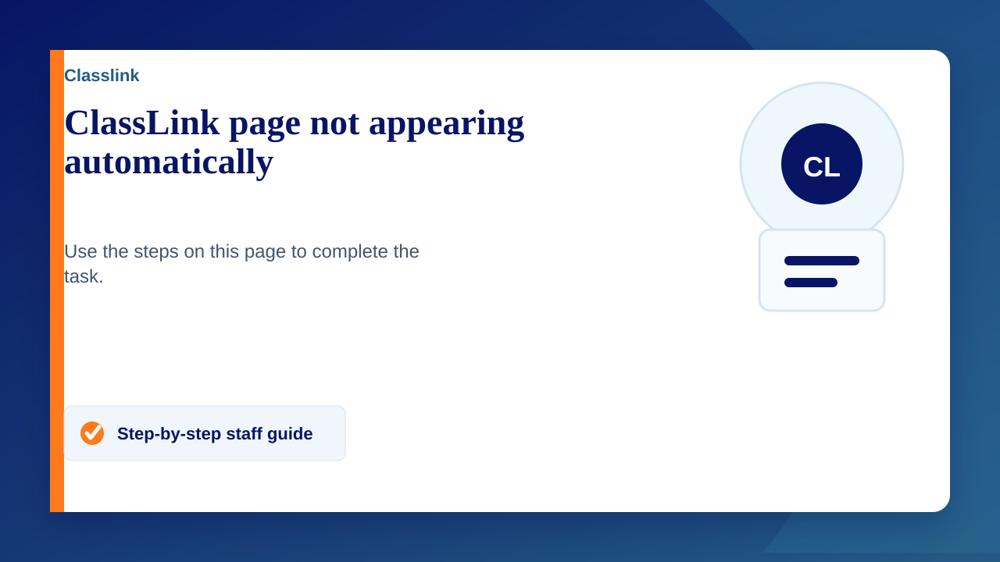
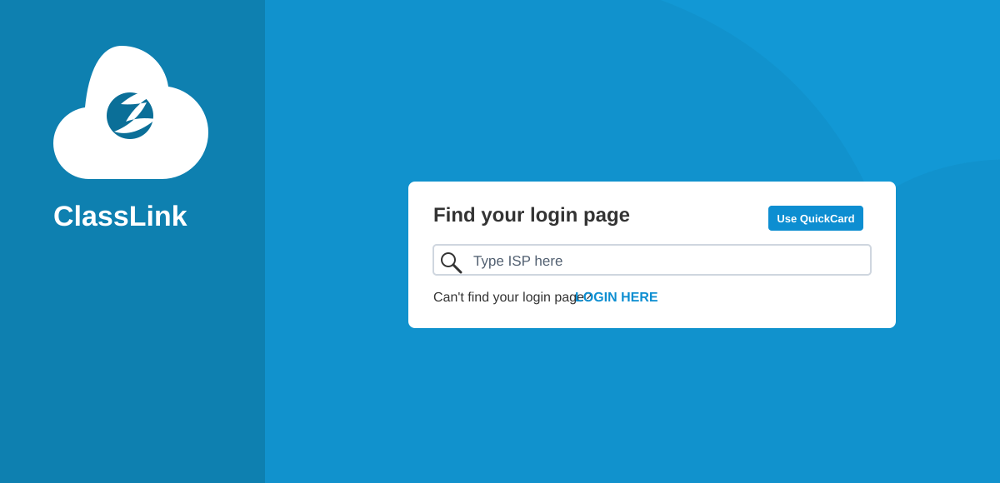

Some staff have reported that the usual ClassLink home page is not appearing automatically. If you search for ClassLink on Google, you may see the generic ClassLink page that asks you to find your login page.

Option 1: Search for ISP
- On the ClassLink page, type ISP into the Find your login page box.
- Select Staff and Students.
- You should then see the ISP landing page. ISP means International Schools Partnership.
- Select Sign in with Microsoft.
Option 2: Go directly to our login page
Use this direct link to bypass the login finder: https://launchpad.classlink.com/ispschools
If you still cannot access ClassLink after trying these steps, please let IT know as soon as possible.